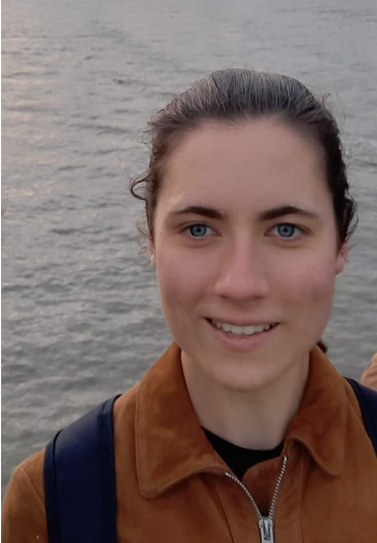

I am a PhD student at UCL, supervised by Prof. Niloy Mitra. I completed my BA in Mathematics at the University of Oxford, and my MSc in Computer Graphics, Vision and Imaging at UCL. I am interested in shape representations for geometry processing and simulation.
Email: romy.williamson.22@ucl.ac.uk